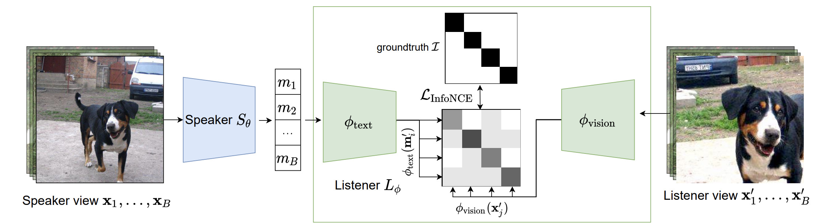

Anubhav

Hi!
I am a Ph.D. student in Computer Science at the University of Maryland, College Park advised by Prof. Abhinav Shrivastava. My research focuses on Computer Vision, primarily recognition and associated problems, and the engineer in me wants to build practical, scalable products in this industry. My recent works range from developing novel unsupervised learning architectures to building large scale geo data mining pipelines to defininig the evaluation paradigms for Open World recognition.
Before starting my graduate studies, I worked in industry for 8 years in various research and engineering roles. I have primarily focused on perception and my most relevant experience in this domain has been in autonomous vehicles space. In my previous life, I worked as an Analyst with Royal Bank of Scotland and Capital One and also managed to clear CFA L3. I received my bachelors from IIT Delhi.
News
- Jan 2023: Organized the workshop Dealing with novelty in the Open Worlds (DNOW) @WACV 2023
- Oct-Dec 2022: Applied Scientist Intern(Co-op)@Amazon: Worked on Visual Geolocalization
- June 2022: Organized ObjClsDisc: In-the-Wild Object Discovery Challenge as part of the workshop Visual Perception and Learning in an Open World @CVPR 2022
- May-Aug 2022: Applied Scientist Intern@Amazon: Researched on edge-based object detection models and successfully deployed models for field trials
- Jan 2022: Organized the workshop Dealing with novelty in the Open Worlds (DNOW) @WACV 2022
- Sep 2021: PatchGame is accepted to NeurIPS'21!
- Jan 2021: I began my masters in CS@UMD!
- Sep 2020 - Jan 2021: Worked as a Research Intern @Swiggy
- Jun 2017 - Sep 2020: Built cool stuff @Netradyne
Research Highlights
|  |
Emergent communication via mid-level patches in a referential game played on a large-scale image dataset.
Kamal Gupta, Gowthami Somepalli, Anubhav Gupta , Vinoj Jayasundara, Matthias Zwicker, Abhinav Shrivastava
|
|
Mining points of interest via address embeddings: an unsupervised approach
LocalRec '21: Proceedings of the 5th ACM SIGSPATIAL
Unsupervisef PoI mapping (polygon boundaries) using GPS, OpenStreetMaps and Address Information in highly dense environments
Abhinav Ganesan, Anubhav Gupta, Jose Mathew
|
|

|
Two Party Evaluation of the Open Visual World
Under Review
Defining a paradigm for unbiased evaluation in open worlds.
|